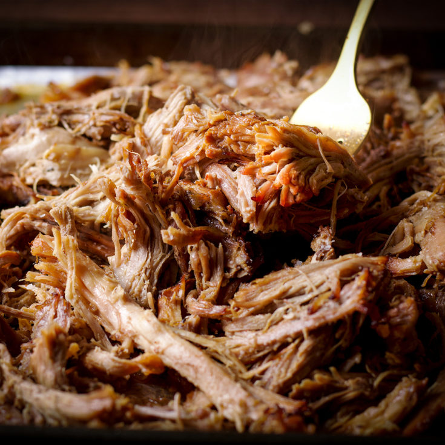

Homemade Carnitas

Description
Carnitas are a fatty, lightly crispy pork dish hailing from Mexico.
The pork is slowly braised until fork tender and then crisped up under a broiler
Ingredients
- Pork shoulder
- Oranges
- Cinnamon
- Onion
- Chicken Broth
- Vegetable Oil
Steps
- Cut fat off pork
- Sear pork in dutch oven
- Add aromatics
- Add chicken broth
- Braise in 375 oven for 5 hours
- Remove from oven and pull apart pork before setting on baking dish and broiling for 10 minutes